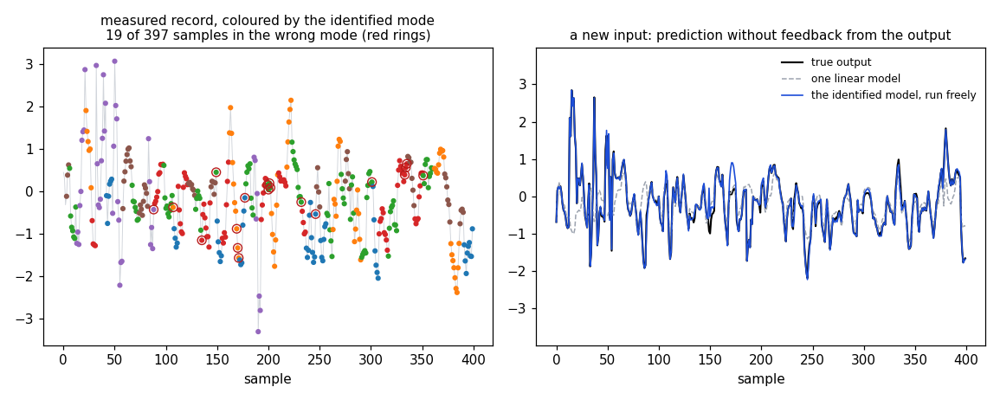

hybrid-id-switched
Hybrid system identification · solved 6 of 6 agent attempts pass
more
Switched ARX with five to eight modes that follow a hidden clock-driven schedule (mean dwell 5-15 samples, drawn per system), orders 2-3, 400 samples, SNR 20-26 dB, one or two pairs of modes with nearly equal parameters (3-4.5 noise standard deviations apart in one-step prediction). No partition of the regressor space reproduces the switching; the query runs under the record's schedule, so every mislabelled sample is a wrong submodel in the free run. Gate: modes_0p8 (free-run error at most half the single linear model's, mode accuracy at least 0.8, mode count right) on 0.9 of 40 held-out systems. The gate is attainable in principle: with the parameters known, dynamic programming recovers the schedule to 0.98 accuracy and clears the rung on 60 of 60 reference systems. Blind, a k-plane clustering with Viterbi smoothing and settings searched across sampled systems clears it on 0.23-0.30 of fresh systems, and a search with split moves and a fixed-variance description length for the count, shipped as the solution until 2026-11-23, on 0.65-0.78; its failures are the mode count. The solution shipped since then passes on 119/120 fresh systems: submodels seeded on short time windows (a window inside one dwell is a pure sample of one mode), merges, splits and removals judged by a penalised likelihood with a constant penalty per mode taken at the residual variance of the larger model, and labels under the stated dwell law. The near-oracle rungs are open above it (parameter genie: 0.20).
Gate. per-seed success is the `modes_0p8` rung of this benchmark's ladder ['beats_linear', 'modes_0p8', 'near_oracle_2x', 'near_oracle_1p2x'] (`--success-mode modes_0p8`), not the evaluator's default flag; the task is solved when the success rate over the grader's held-out seeds is `>= 0.9`
Axes: family:hybrid_id, track:identification, kind:switched, scenario:switched_v0, gate:modes_0p8, built:open
Each video or figure re-runs the attempt's final controller through the task's own evaluator on a public seed (never the grader's held-out ones). The table under each one is the official grade on the held-out seeds.


switched_v0| criterion | graded | needed |
|---|---|---|
| base:modes_0p8 | 1.000 | ≥ 0.900 |
The agent's final message
`/app/work/controller.py` now passes the gate with a wide margin: 396 of 400 systems (99%) reach `modes_0p8` on seeds 0–399, against the required 90%. The official evaluator gives 5/5 on seeds 0–4 and 6/6 on seeds 400–405. Processor time is about 1.5 s per system on average and 2.5 s at most, against the 10 s limit. Two caveats on that 99%: - **Tuning seeds:** seeds 0–199 were used to set the mode-count threshold; seeds 200–399 were fresh and gave 198/200. - **Version tested:** seeds 200–339 were run just before the final cleanup, which changed only the debug output, a time guard and one guard on the minimum mode count. How the procedure works: - **Search:** candidate submodels are least-squares fits to short windows and to unions of segments, scored over runs of consecutive samples. Accepted models are refitted by Viterbi segmentation plus least squares per mode. - **Number of modes:** a model is kept or added only if it lowers the segmentation cost by at least 47 noise variances after a full refit. A direct split test on each model catches pairs of nearly equal modes. The search runs three times on different random streams and keeps the best. - **Answer:** soft EM refines the parameters, labels come from the posterior, and the query is the average free run over 200 schedules sampled from that posterior. The four failures are of two kinds: - **Free-run error (seeds 40, 45, 286):** the count is right and label accuracy is 0.95–0.99, but the free-run error exceeds half the …
Shown: public seed 0 (switched_v0); this episode passes the modes_0p8 rung. This episode: valid yes, timed_out no, elapsed_s 1.7, free_run_error 0.162, linear_error 0.905, privileged_error 0.0263, ratio_to_privileged 6.16, mode_accuracy 0.952, n_modes_answer 6, n_modes_true 6. Left: the record the procedure received, each sample coloured by the mode it was assigned to (labels matched to the truth). Right: the identified model run on a new input without seeing the output.
controller.py · trial hybrid-id-switched__MucVyrN